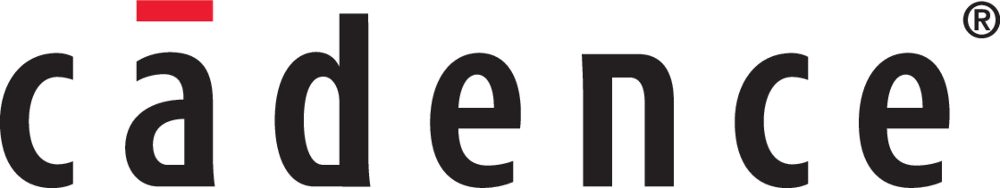
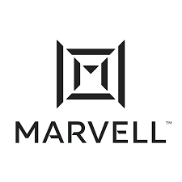

VLSI Hackathon 2026
Where FPGA meets firmware. Build it. Prove it. Win it.
Solve as many hardware challenges as you can in 24 hours. Fastest team wins.
Technion — Israel Institute of Technology | June 4 – 5, 2026


What is VLSI Hackathon?
A fast-paced engineering hackathon that crashes together FPGA hardware and embedded software.
24 Hours of Building
Intense, focused engineering. No presentations — only working prototypes count.
Real Hardware
DE10-Lite FPGA + ESP32 controller kit. Design digital circuits and firmware on real silicon.
Self-Discovery
No tutorials, no hand-holding. You learn by doing — using the internet, AI tools, and your own ingenuity.
AI-Assisted Engineering
VS Code + GitHub Copilot are your teammates. Use AI skills to accelerate your development.
How It Works
From kit pickup to the final leaderboard — here's the journey.
Get Your Kit
Receive your DE10-Lite FPGA and ESP32 kit 2 weeks before the event.
Train & Practice
Install tools, explore skills, and tackle practice challenges on your own.
Compete
24 hours. Secret challenges revealed on demand. Build fast, score points.
Win
Judges verify. Points accumulate. Top teams take the crown.
Explore
Jump to any section to start preparing.
Sponsors
Made possible by industry leaders in semiconductor and technology.

